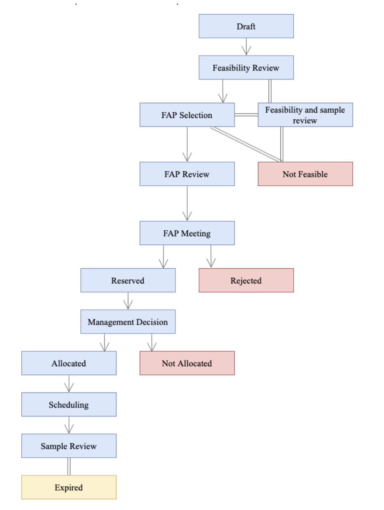
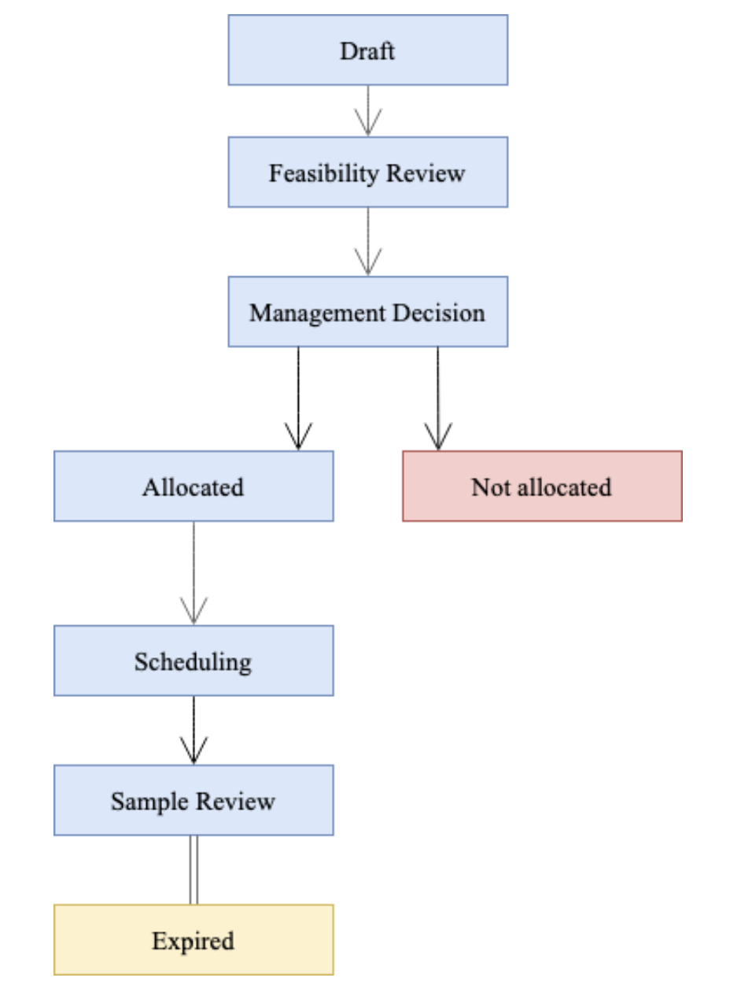

Proposal workflows
What are proposal workflows?
Proposal Workflows
Proposal workflows outline the sequential steps a proposal follows from draft to final decision represented by statuses, such as 'Draft', 'Feasibility Review', 'Allocated', 'Not Allocated', 'Reserved', and 'Rejected'. Each status marks a key stage in the proposal's progression. For example, moving from 'Draft' to 'Feasibility Review' indicates the proposal's readiness for preliminary assessment.
Proposal workflows control how and when the User Office system will display information to different roles based on statuses. The workflow manages how proposals are processed, with User Officers defining the statuses and events that guide proposals through their lifecycle. Events triggering status transitions include user submissions, call deadlines, feasibility reviews, and User Officers' decisions. User Officers can customise workflow templates by adding, removing or modifying statuses to fit specific needs, such as including 'Technical Review' or 'FAP Review' stages. Proposal workflows ensure systematic processing of proposals, allowing User Officers to track statuses and set up automatic notifications for users' proposals at different stages of review.

What are proposal statuses?
proposal statuses
Proposal statuses
What are status events?
Status events
Status Events
What are status actions?
Status actions
Status Actions
How do I create a proposal workflow?
1. Navigate to the Proposal Workflows page
- Go to the main menu and select Settings
- From the dropdown menu, choose Proposal Workflows
2. Create a new Proposal Workflow
- On the Proposal Workflows page, click the
CREATEbutton - Enter a name and description for your new Proposal Workflow
- Click
CREATEto proceed
3. Edit the Proposal Workflow
- The Proposal Workflow Editor will open. From this page, you can set up the Proposal Workflow.
- You can drag and drop Proposal Statuses into the Proposal Workflow, reordering them as desired. The order of the statuses represent the workflow that the proposal will progress through.
- You can delete {delete} statuses to remove them from the workflow.
-
You can view the
-
Note: The 'Draft' Status is a mandatory starting status for all proposals. Therefore it cannot be deleted or have other statuses precede it.
4. Update your changes
- Once you are satisfied with your edits, click the Update button to save and apply the changes to the PDF template
How do I edit a proposal workflow?
How do I assign a proposal workflow to a call?
Statuses
Draft
Draft When a proposal is created it gets draft status before it is submitted.
Feasibility review
Feasibility review indicates that proposal feasibility review should be done.
Not feasible
Not feasible indicates that the proposal is not feasible (as assessed by the technical review)
FAP selection
FAP selection indicates that the proposal is ready to be assigned to a FAP
FAP review
FAP review indicates that the proposal FAP review should be done
Allocated
Allocated indicates that proposal time allocation should be done
Not allocated
Not allocated indicates that the proposal is not allocated
Scheduling
Scheduling indicates that the proposal should be scheduled
Expired
Expired indicates that the proposal has expired
FAP meeting
FAP meeting indicates that the proposal is in FAP meeting for evaluation
Rejected
Rejected indicates that the proposal is rejected
Feasibility and sample review
Feasibility and sample review indicates that the proposal feasibity and sample review can be done simultaneously
Sample review
Sample review status that indicates that proposal sample review can be done
Management decision
Management decision status that indicates that proposal sample review can be done
General Workflow

Rapid Access Workflow
